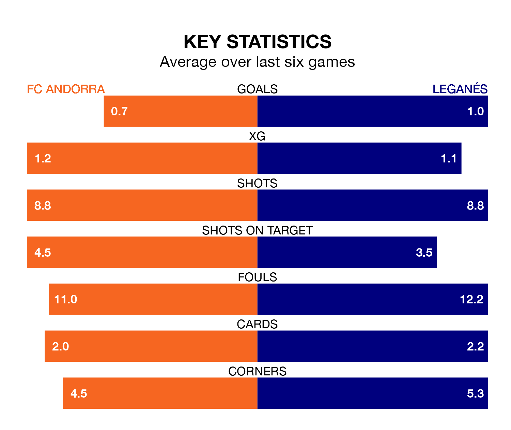

Leganés travel to Estadi Nacional looking to secure a first win in seven Segunda División games against FC Andorra on Sunday lunchtime.
Leganés have lost one and drawn five matches since they last earned three points – against Levante UD on November 10.
They face an Andorra side who have won one and drawn four over that time.
Leganés are top of the table after 21 games, of which they have won 11 and drawn six, earning 39 points.
Andorra are 17 places behind the visitors in 18th, with six wins and five draws putting them on 23 points.
With 19 goals in 21 games so far this season, the home team are scoring at below the league average rate with 0.9 goals per game. And they are conceding more than average, letting in 27 goals at a rate of 1.3 per game.
Leganés, meanwhile, are above average scorers, with 1.5 goals per game, compared to a league average of 1.2. They have conceded 0.6 goals per game.
With Diego Conde between the sticks, Leganés can rely on one of the league's safest pair of hands. He has kept eight clean sheets in his 19 appearances this season, and only two other 'keepers – Sporting Gijón's Orlando Rubén Yáñez Alabart and CD Tenerife's Juan Soriano Oropesa – have been able to prevent the opposition scoring on more occasions in the Segunda División.
In Andorra's net, Dani Martín has seven clean sheets in 14 games. He has conceded a goal every 105 minutes, 40% more often than the 148 minutes between goals for Conde Alcolado.
Over the last year, Andorra and Leganés have played each other twice. Andorra won one of them and they drew the other.
Their last meeting was on August 13, when Andorra won 1-0 away.
Andorra's last match was on December 19, a 2-0 loss against Racing Santander.
Leganés drew 1-1 with CD Tenerife last time out, on December 20, with Sergio González Poirrier on the scoresheet.
Updated: 15:34, 08/01/24